The Arduino Due is a microcontroller board based on the Atmel SAM3X8E ARM Cortex-M3 CPU (datasheet). It is the first Arduino board based on a 32-bit ARM core microcontroller. It has 54 digital input/output pins (of which 12 can be used as PWM outputs), 12 analog inputs, 4 UARTs (hardware serial ports), a 84 MHz clock, an USB OTG capable connection, 2 DAC (digital to analog), 2 TWI, a power jack, an SPI header, a JTAG header, a reset button and an erase button.The board contains everything needed to support the microcontroller; simply connect it to a computer with a micro-USB cable or power it with a AC-to-DC adapter or battery to get started. The Due is compatible with all Arduino shields that work at 3.3V and are compliant with the 1.0 Arduino pinout.
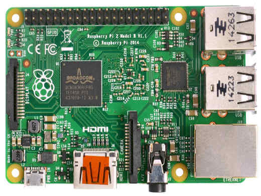
RASPBERRY PI
The Raspberry Pi is a single-board computer developed in the UK by the Raspberry Pi Foundation . The Raspberry Pi is a credit-card sized computer that plugs into your TV and a keyboard. It’s a capable little PC which can be used for many of the things that your desktop PC does, like spreadsheets, word-processing and games. It also plays high-definition video. The design is based around a Broadcom BCM2835 SoC, which includes an ARM1176JZF-S 700 MHz processor, VideoCore IV GPU, and 512 Megabytes of RAM. The design does not include a built-in hard disk or solid-state drive, instead relying on an SD card for booting and long-term storage. This board is intended to run Linux kernel based operating systems.
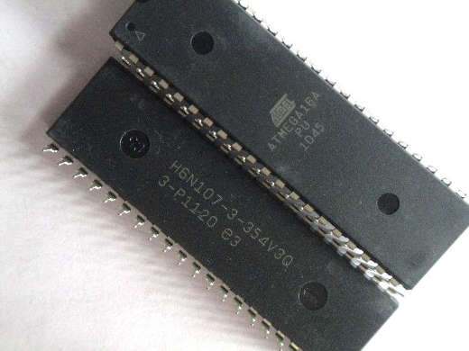
ATMEGA-16
The high-performance, low-power Atmel 8-bit AVR RISC-based microcontroller combines 16KB of programmable flash memory, 1KB SRAM, 512B EEPROM, an 8-channel 10-bit A/D converter, and a JTAG interface for on-chip debugging. The device supports throughput of 16 MIPS at 16 MHz and operates between 4.5-5.5 volts. By executing instructions in a single clock cycle, the device achieves throughputs approaching 1 MIPS per MHz, balancing power consumption and processing speed.
MAGNETOMETER
Description: This is Honeywell’s HMC5883L, a 3-axis digital magnetometer designed for low-field magnetic sensing. The sensor has a full-scale range of ±8 Guass and a resolution of up to 5 milli-Gauss.Supplied voltage should be between 2.16 and 3.6VDC.Communication with the HMC5883L is simple and all done through an I2C interface. All registers and operating modes are well described in the datasheet below.Comes in a low-height, LCC surface mount package. For a breakout board, see below.Features:Simple I2C interface,2.16-3.6VDC supply range,Low current draw,5 milli-gauss resolution,Dimensions: 3.0x3.0x0.9mm.
ENCODERS
Description: This 1024 pulse per rotation rotary encoder outputs gray code which you can interpret using a microcontroller and find out which direction the shaft is turning and by how much. This allows you to add feedback to motor control systems. Encoders of this kind are often used in balancing robots and dead reckoning navigation but it could also be used as a very precise input knob. Features:Resolution: 1024 Pulse/Rotation,Input Voltage: 5 - 12VDC,Maximum Rotating Speed: 6000rpm,Allowable Radial Load: 5N,Allowable Axial Load: 3N,Cable Length: 50cm,Shaft Diameter: 6mm
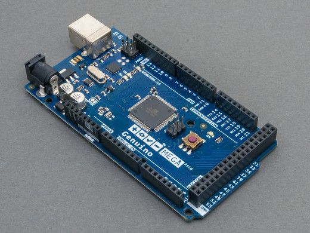
MICROCONTROLLER BOARD
The Arduino duemilanove ATmega2560 is a low-power CMOS 8-bit microcontroller based on the AVR enhanced RISC architecture. By executing powerful instructions in a single clock cycle, the ATmega 2560achieves throughputs approaching 1 MIPS per MHz allowing the system designer to optimize power consumption versus processing speed. It also possesses a large 256 kb of flash and 83 data lines which played a key role in driving many peripherals like motor drivers ,sensors etc.
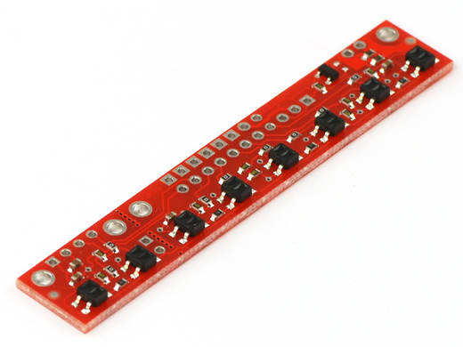
LINE SENSOR
Line sensors are used for sensing white line on dark surface or black line on light surface. This line sensor board has seven line sensors connected together. These sensors working together can follow any curved or zigzag path. The multiple sensors can even detect nodes and move on the maze of white or black lines. Line sensor consists of high intensity red LED for illumination and directional photo transistor for line sensing. Phototransistor consists of a photo transistor and convex lens. Because of the precise alignment between lens and photo transistor it has a very narrow viewing angle of 5 degrees. This makes the line sensor highly immune to ambient light. This sensor gives 0.18 volts on bright surface and gives 2.2V or more on the dark surface. Its output is analog in nature. Because of analog output one can write complex algorithm to follow white line using microcontroller
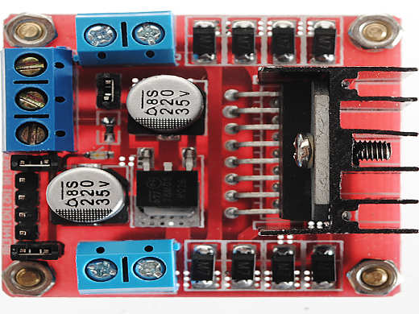
H BRIDGE MOTOR BOARD
An H-bridge is an electronic circuit which enables a voltage to be applied across a load in either direction. These circuits are often used in robotics and other applications to allow DC motors to run forwards and backward
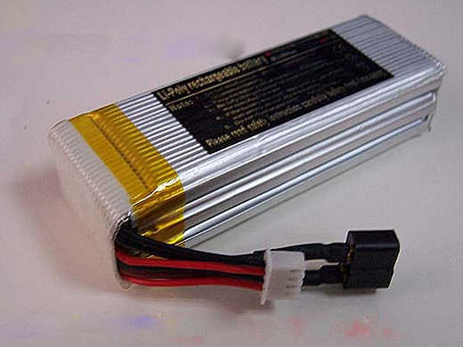
BATTERIES
Because we had to access many sensors drives, we found it best to use multiplexers in our pcbs. this made our number of read strobes vastly increase. ICs used were 1>4067 analogue multiplexer (16 channel to 1) 2> 75hc15n digital multiplexer (8 channel to 1).
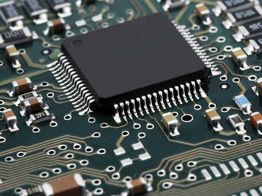
PCB's
Because we had to access many sensors drives, we found it best to use multiplexers in our pcbs. this made our number of read strobes vastly increase. ICs used were 1>4067 analogue multiplexer (16 channel to 1) 2> 75hc15n digital multiplexer (8 channel to 1).
PS3 GAMEPAD
We used a PS3 remote to operate our Manual Robot. The manual robot was actually the same robot which was used to build the khafraa pyramid by burning a different program in the microcontroller. This different program made Arduino to read values from the PS3 gamepad. The PS3 was connected to the microcontroller with the help of an Arduino USB module.
ARDUINO USB MODULE
The Arduino USB module makes Arduino Duemilanove capable of reading the Serial values sent via USB port from the PS3 remote. There is separate library to use this PS3 with the help of Arduino USB module. So, USB cable from the PS3 is connected to this USB module which in turn connected to Arduino in which respective instructions can be given as per input from the PS3. This data from the PS3 is then processed in microcontroller to control the speed of the robot using Pulse Width Modulation (PWM). Pulse-width modulation (PWM) of a signal or 27 power source involves the modulation of its duty cycle, to control the amount of power sent to the load. H-Bridges were used to drive the motor
SENSORS
The Arduino USB module makes Arduino Duemilanove capable of reading the Serial values sent via USB port from the PS3 remote. There is separate library to use this PS3 with the help of Arduino USB module. So, USB cable from the PS3 is connected to this USB module which in turn connected to Arduino in which respective instructions can be given as per input from the PS3. This data from the PS3 is then processed in microcontroller to control the speed of the robot using Pulse Width Modulation (PWM). Pulse-width modulation (PWM) of a signal or 27 power source involves the modulation of its duty cycle, to control the amount of power sent to the load. H-Bridges were used to drive the motor
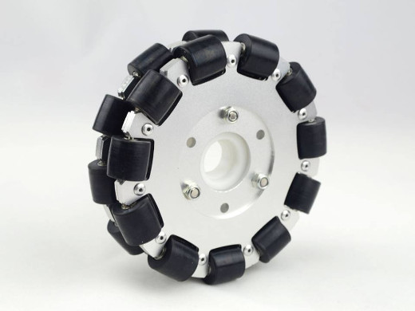
OMNIWHEELS
Omni wheels or poly wheels, similar to Mecanum wheels, are wheels with small discs around the circumference which are perpendicular to the rolling direction. The effect is that the wheel will roll with full force, but will also slide laterally with great ease, employed in holonomic drive systems.
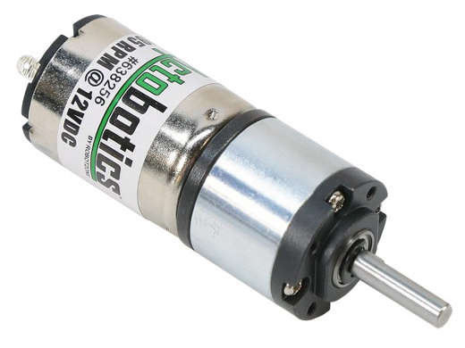
PLANETARY GEAR MOTOR
Compact, and yet extremely powerful, are the units of the 300 Planetary gear motor series. Their planetary drive train makes them the ideal choice for all the severe duty applications where shock loadings and impacts are more the rule than the exception. The product configuration is highly versatile, due to several options as far as the mounting, the gear layout, the output shaft and the motor interface. All the features are available for each of the 18 finely spaced frame sizes, spanning over the 1.000 - Finding the perfect match to any drive problem is therefore more than a wish, it is something users can safely rely on - always.1.400.000 Nm torque range.
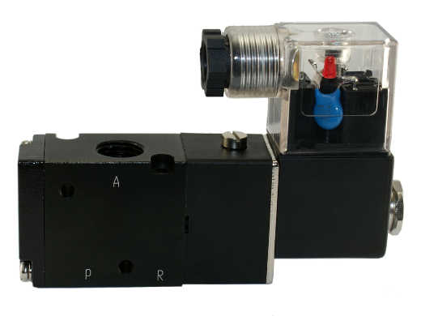
SOLENOID VALVE
A solenoid valve is an electromechanically operated valve. The valve is controlled by an electric current through a solenoid: in the case of a two-port valve the flow is switched on or off; in the case of a three-port valve, the outflow is switched between the two outlet ports. Multiple solenoid valves can be placed together on a manifold. Solenoid valves are the most frequently used control elements in fluidics. Their tasks are to shut off, release, dose, distribute or mix fluids. They are found in many application areas. Solenoids offer fast and safe switching, high reliability, long service life, good medium compatibility of the materials used, low control power and compact design.
PNEUMATIC ACUTATOR
A pneumatic actuator converts energy (typically in the form of compressed air) into mechanical motion. The motion can be rotary or linear, depending on the type of actuator. A Pneumatic actuator mainly consists of a piston, a cylinder, and valves or ports. The piston is covered by a diaphragm, or seal, which keeps the air in the upper portion of the cylinder, allowing air pressure to force the diaphragm downward, moving the piston underneath, which in turn moves the valve stem, which is linked to the internal parts of the actuator. Pneumatic actuators may only have one spot for a signal input, top or bottom, depending on action required. Valves require little pressure to operate and usually double or triple the input force. The larger the size of the piston, the larger the output pressure can be. Having a larger piston can also be good if air supply is low, allowing the same forces with less input.
IMAGE PROCESSING
We are working on computer vision and image processing using OpenCV for object detection,tracking and Trajectory Prediction.The main aim is to predict the trajectory of Shuttle Cock by tracking the initial path using Different Image Processing Techniques.In order to improve the FPS we are using Hardware Accelerated Approach. OpenCL and CUDA are being used. IDE used is Microsoft Visual Studio Express 2012.
ATMEGA PROGRAMMING
This year we are Interfacing Sensors with ATMega 16 because of higher Efficiency,Clock Speed and Flexibility. All the programming on ATMega is done using ATMel Studio 6.0. ATMega programming is based on C Language. For making the Programming Easy we have built a library using which one can upload a code in ATMega using Syntax and functions of Arduino Programming Interface. We are also working on a communication Protocol using which all the Input and Output tasks will be performed by Arduino/ATMel while the processing will be done by Raspberry PI.
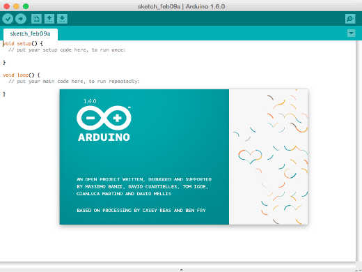
ARDUINO PROGRAMMING
Navigation of the robots is done using Arduino Microcontrollers . All the programming of it is done using Arduino IDE. Various Machine Learning and Control Algorithms are being used for navigation of the Robot.PS2 controller is also Interfaced with Arduino for Manually Controlling The Bots.